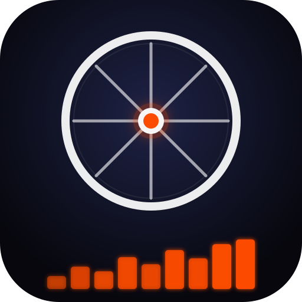

Turn any cycling or running activity into a stunning PNG — map, power chart, and stats — ready to post on Strava or share with your club.
Two ways to get your ride into the app — pick whichever suits you.
If you uploaded photos with your activity on Strava, you can use one as the background of your report.
Rides that have photos show a "📷 Use ride photo as background" button below the stats. Only rides with photos show this button.
Your ride photos appear as small thumbnails. Click one to select it — it gets an orange border. Click again to deselect.
Click the ride name/stats area to load the ride. The selected photo is automatically set as the background in With Photo mode — the map blends over it.
Use Map → With Photo controls to change the photo opacity, map opacity, and blend mode. Toggle With Photo off and back on to restore your photo without re-selecting.
Pan and zoom the map, then personalise everything before exporting.
Use the Map menu to switch between dark, light, maritime, and navy styles. Pan and zoom freely.
Enable Map → With Photo then choose a photo from your device. Or select one directly from Strava (see above).
Open Designer ▾ → Route Glow to replace the power-zone route with a neon glow effect. Adjust colour, width, glow size, and intensity. Great for rides without a power meter.
Enable Map → Route Mask to fade the map tiles away from the route, focusing attention on your path. Saved in your layout.
Type a title in the Custom Title box on the landing screen before loading your ride.
Enable Designer → Designer Mode to drag the stat panels, title, and chart anywhere on the card. Resize and adjust opacity per element.
Set your FTP on the landing screen. The chart colours each second by power zone. Use Chart ▾ to change smoothing and chart mode.
Go to Designer → Save Layout to download a .json file. Load it next time to restore your exact panel positions, route glow, route mask, and all settings.
The toolbar has an ⬇ Export Screen button. Click it and your browser downloads a PNG at full screen resolution — ready to post on Strava, Instagram, or your club WhatsApp.
The exported image captures exactly what you see. Tilt the map with the Pitch slider in Designer for a dramatic 3D look.
A short spinner appears, then your browser downloads the PNG automatically.
Post directly to Strava as an activity photo, drop it in your club WhatsApp, or share on Instagram. The 16:9 format works perfectly on all platforms.